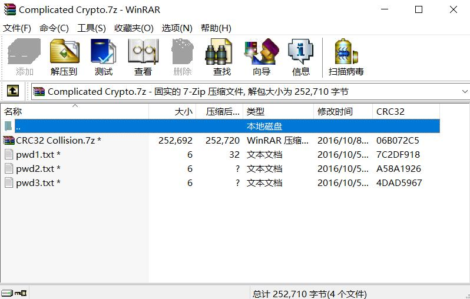
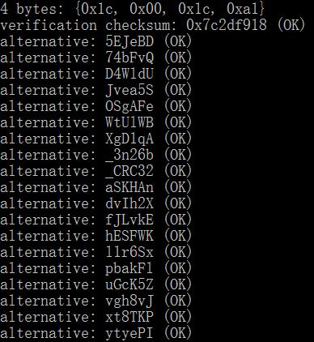
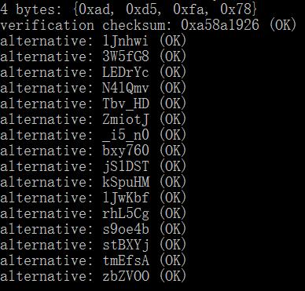
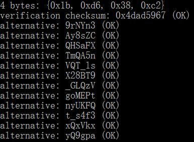

CRC32 碰撞攻击
0x01 CRC概述
循环冗余校验（Cyclic redundancy check，通称“CRC”）是一种根据网络数据包或电脑文件等数据产生简短固定位数校验码的一种散列函数，主要用来检测或校验数据传输或者保存后可能出现的错误。 我们熟知的 MD5 其实可以看做一个强化版的 CRC128，只不过由于 CRC 多项式是线性结构，很容易通过改变数据方式达到 CRC 碰撞，相对于具有强离散性的 MD5，CRC 的安全性差了很多，这点之后再提。
0x02 CRC算法
CRC 算法的数学基础是 GF(2) 多项式算术。 CRC
算法的过程就是把需要进行校验的数据选定一个除数进行一次除法运算，称为模 2
除法，跟通常二进制除法规则不同，得到的余数作为循环冗余码。数据接收端接收到数据之后进行同样的运算，即可判断数据在传输过程中是否出现了变化。
举一个例子 要传输的数据为：1101011011 除数设为：10011
在计算前先将原始数据后面填上 4 个 0：11010110110000 下面是计算过程
1
2
3
4
5
6
7
8
9
10
11
12
13
1411010110110000
10011
-----xor
01001110110000
10011
-----xor
0000010110000
10011
-----xor
00101000
10011
-----xor
001110
----answer
生成多项式 CRC-16：0x8005 CRC-32：0x04C11DB7
余数初始值和结果异或值 CRC-16：0x0000; 0x0000 CRC-32：0xFFFFFFFF; 0xFFFFFFFF
0x03 实例
网上看到的一个题

有四个加密的文件，其中三个是短文档，只有 6 位，那我们可以选择 CRC32 碰撞，在网上找了个脚本跑了一下

可以看到三个图中有可疑字符串，将它们拼起来得到 **_CRC32_i5_n0t_s4f3** 这其实就还原了 txt 中的内容，可以用这个做密码解密压缩包，进入本题的下一步。